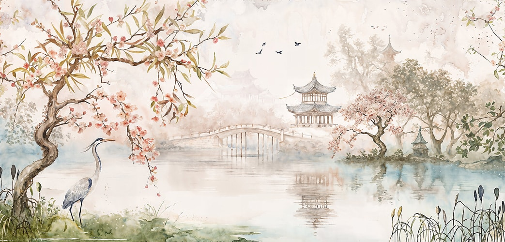
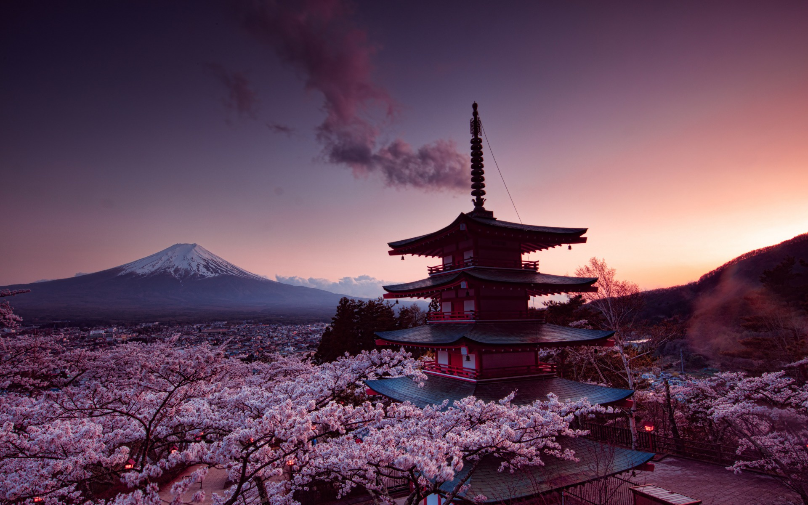
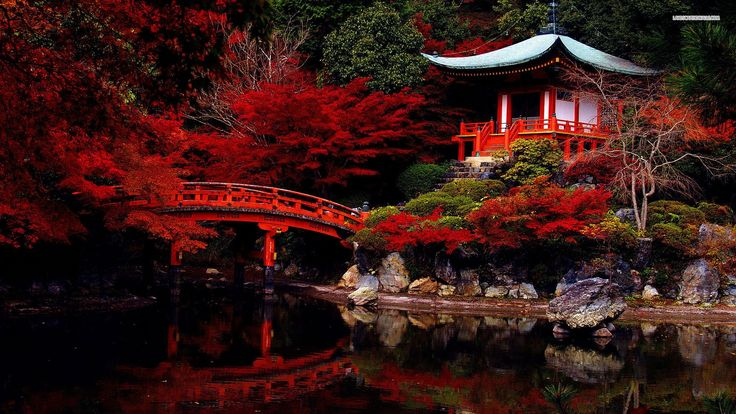
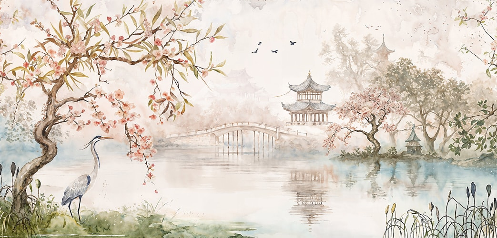
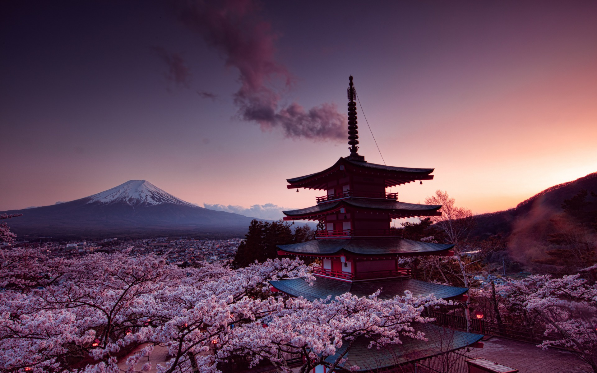
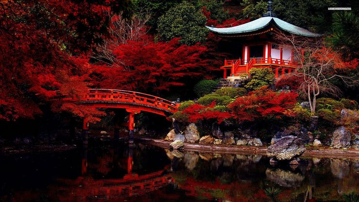

JAPAN 🌸
Culture and history of Japan
Culture and history of Japan

 





Japan is a fascinating country known for its blend of ancient traditions and modern innovations. Comprising over 6,800 islands, it boasts stunning landscapes, from the iconic Mount Fuji to serene cherry blossoms in spring and beautiful hot springs like those in Hakone. With a rich culture shaped by Shinto and Buddhism, Japan offers traditional experiences such as tea ceremonies, sumo wrestling, and calligraphy, alongside cutting-edge technology, including the high-speed Shinkansen trains and robotics. Major cities like Tokyo, Kyoto, and Osaka provide a mix of vibrant urban life, historic temples, and world-famous cuisine, including sushi, ramen, and tempura. Whether experiencing its seasonal beauty or exploring ancient shrines, Japan offers a unique blend of the old and the new.